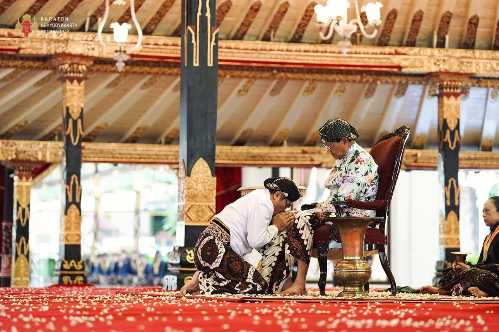

06 — Struktur Sosial
Tata Hierarki dalam Ruang Keraton
Keraton Yogyakarta bukan sekadar istana. Ia adalah peta kosmologi Jawa yang diwujudkan dalam arsitektur — setiap zona ruang mencerminkan lapisan status sosial dan kedekatan spiritual terhadap pusat kekuasaan.
✦ Klik setiap lingkaran untuk melihat detail zona
Sultan
Zona Keraton
I
Sultan (Ngrasa Dalem)
Sultan bukan sekadar penguasa, melainkan pusat keseimbangan antara rakyat, budaya, dan nilai spiritual Jawa. Dalam pandangan kosmologi Jawa, Sultan menjadi simbol harmoni yang menyatukan dunia manusia dengan nilai-nilai luhur kehidupan.

📷 Foto KedhatonII
Keluarga Inti Keraton (GKR,KPH,BRM)
Keluarga inti keraton merupakan pewaris tradisi dan penjaga keberlangsungan budaya. Mereka memikul tanggung jawab besar untuk menjaga martabat serta nilai-nilai luhur keraton.
 📷 Foto Sri Manganti
📷 Foto Sri MangantiIII
Abdi Dalem
Abdi Dalem adalah simbol pengabdian yang tulus. Banyak di antara mereka mengabdi bukan karena materi, tetapi karena kecintaan terhadap budaya dan kehormatan melestarikan warisan leluhur.
 📷 Foto Kamandhungan
📷 Foto KamandhunganIV
Kawula Keraton
Kawula Keraton adalah masyarakat yang hidup di sekitar keraton dan memiliki kedekatan budaya dengan lingkungan istana. Mereka menjadi jembatan antara tradisi keraton dan kehidupan sehari-hari masyarakat.
 📷 Foto Baluwarti
📷 Foto BaluwartiV
Rakyat Umum (Wong cilik)
Lapisan terbesar dalam struktur sosial ini adalah rakyat. Mereka merupakan fondasi kehidupan kerajaan karena keberlangsungan negara dan budaya pada akhirnya bergantung pada kesejahteraan rakyatnya.
 📷 Foto Alun-alun
📷 Foto Alun-alun06